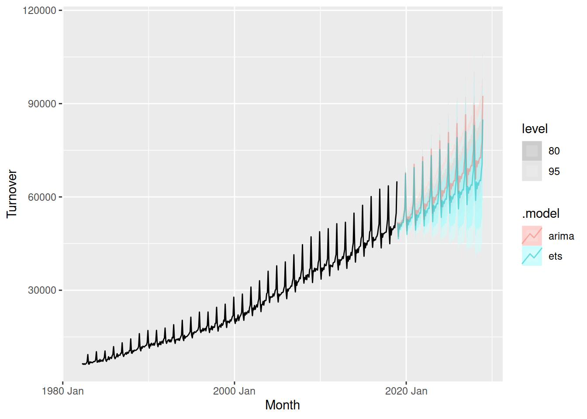
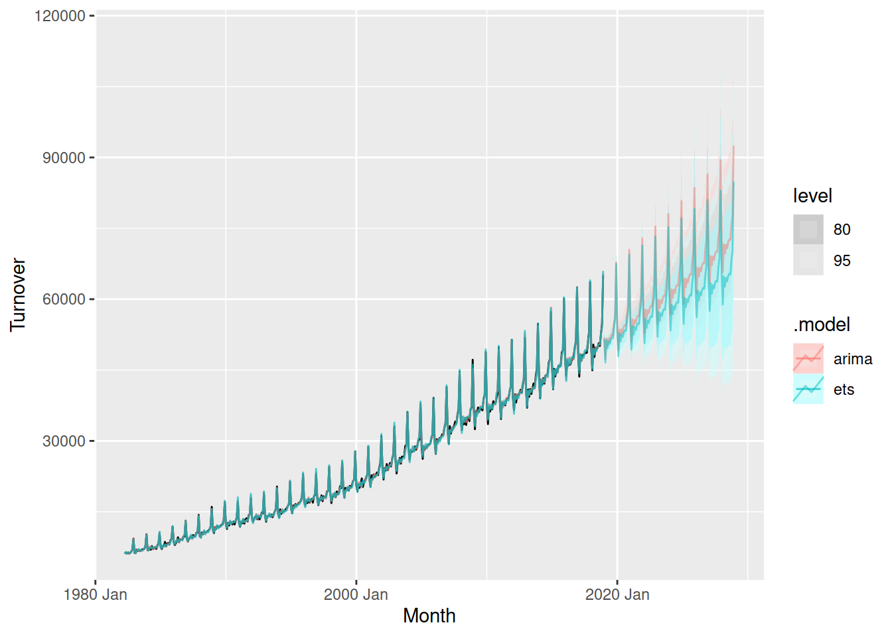
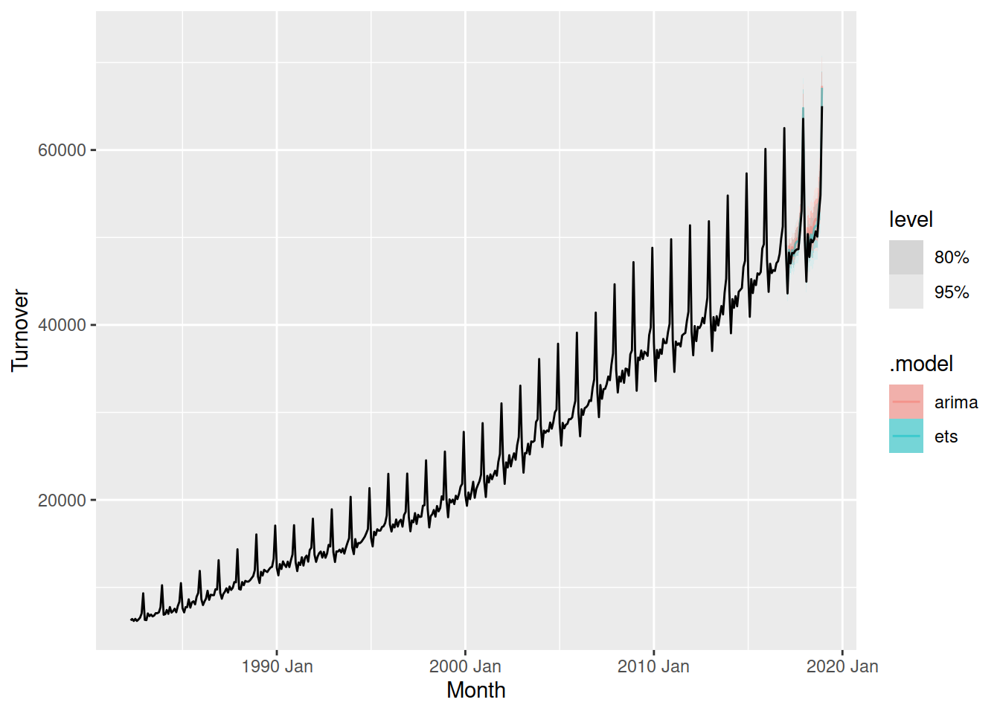
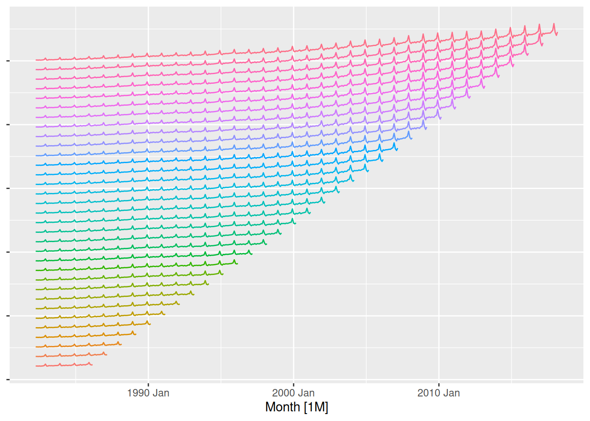

Exercises
Check with your mentor on Slack
Learn
There are several approaches which can be used to evaluate the performance of a forecasting model. These methods can be split into two main categories: accuracy summaries and diagnostic checks. Accuracy summaries are single valued representations of the model’s performance (like features, but on forecast errors), while diagnostic checks involve plotting the residuals to identify any shortcomings in the model.
Accuracy summaries
In the previous exercise we looked at forecasting the total Australian retail turnover using ETS and ARIMA models, and we produced these forecasts:
Plotting the forecasts simultaneously makes it easy to compare them. This allows us to see that while the seasonality and intervals from both models are similar, the trend from ARIMA is stronger than ETS. But which model is better?
To answer this we can summarise the forecasting performance of the models. The simplest is the accuracy on the historical training data.
In addition to the forecasts shown above, we produce 1-step forecasts on the training data when fitting the model. We can obtain these from the .fitted column of the augment() output.

Both models match the historical data closely, but which is more accurate? For this we can use the accuracy() function, which summarises the errors into a single summary statistic.
# A tibble: 2 × 10
.model .type ME RMSE MAE MPE MAPE MASE RMSSE ACF1
<chr> <chr> <dbl> <dbl> <dbl> <dbl> <dbl> <dbl> <dbl> <dbl>
1 ets Training 7.76 421. 327. 0.0486 1.55 0.261 0.294 -0.101
2 arima Training -15.4 382. 277. -0.0713 1.22 0.221 0.266 0.0797By default you will see a set of statistics that summarise the point forecasting accuracy, where the models closer to 0 are more accurate. MAE and RMSE are commonly used, but their scale independent versions MASE and RMSSE are useful if you’re comparing between multiple datasets.
In all accuracy metrics we see that the ARIMA model is more accurate on the training data. But is it more accurate for forecasting?
Your turn!
Compare the in-sample accuracy statistics for all models used to forecast Australia’s print media turnover. Which is most accurate, and which is least? Does this align with your expectations?
A more genuine approach to calculating forecasting performance is to use a training and test set split. This separates the data into two parts, and because the test data is not used in producing the forecasts, it should provide a reliable indication of how well the model is likely to forecast on new data.
To withhold some data for forecast evaluation, we first filter() the data to exclude the test period before training the model.

We can then calculate the same accuracy metrics on the forecasted test set using accuracy() again, but this time we need to provide the data used.
# A tibble: 2 × 10
.model .type ME RMSE MAE MPE MAPE MASE RMSSE ACF1
<chr> <chr> <dbl> <dbl> <dbl> <dbl> <dbl> <dbl> <dbl> <dbl>
1 arima Test -1217. 1340. 1217. -2.41 2.41 0.979 0.935 0.0605
2 ets Test -737. 913. 761. -1.44 1.49 0.612 0.637 -0.199 Looks like ETS was actually more accurate at forecasting the two year test set.
Your turn!
Now compare the out-of-sample (test set) accuracy statistics for all models used to forecast Australia’s print media turnover. Which is most accurate, and which is least? Does it differ to the results from the in-sample (training set) accuracy?
However a test set of two years isn’t a very reliable indication of forecasting performance - what if these two years looked slightly different from the training data and one model got lucky?
The gold standard in forecasting performance evaluation is to use time series cross-validation. This involves creating many training and test splits across many time points in the data. The most common is to use a stretching window, which incrementally grows the training data to include new information. Instead of using filter() to create the training set, we will now use stretch_tsibble() to create the stretching ‘folds’ of training data. The .id column identifies the fold of cross-validation for each series.
Cross-validation options
It is useful to set a few options in stretch_tsibble(), as the default can easily create 100s of folds. This helps reduce the workload for your computer while still giving a reasonable indication of your model’s forecasting performance!
.initcontrols the initial fold size, I’ve set it to 48 months to include 4 years of data to start with.stepcontrols how much additional data is introduced in each fold, 12 months will increase the training data’s length by 1 year at a time.
# A tsibble: 7,920 x 3 [1M]
# Key: .id [33]
Month Turnover .id
<mth> <dbl> <int>
1 1982 Apr 6225. 1
2 1982 May 6382. 1
3 1982 Jun 6162. 1
4 1982 Jul 6399. 1
5 1982 Aug 6163. 1
6 1982 Sep 6331. 1
7 1982 Oct 6535. 1
8 1982 Nov 7022. 1
9 1982 Dec 9322. 1
10 1983 Jan 6286. 1
# ℹ 7,910 more rows
To produce forecasts on the cross-validation folds and compute cross-validated accuracy summaries, we again train the models and use accuracy() but this time on the cross-validated data. This might take a while since we are now estimating a model making a forecast for every fold in cross-validated data!
# A tibble: 2 × 10
.model .type ME RMSE MAE MPE MAPE MASE RMSSE ACF1
<chr> <chr> <dbl> <dbl> <dbl> <dbl> <dbl> <dbl> <dbl> <dbl>
1 arima Test -73.9 557. 429. -0.307 1.80 0.344 0.389 0.469
2 ets Test 70.3 653. 515. 0.430 2.19 0.414 0.456 0.503
Your turn!
Now compare the cross-validated accuracy statistics for all models used to forecast Australia’s print media turnover. Which is most accurate, and which is least? Does it differ to the results from the in-sample (training set) and out-of-sample (test set) accuracy?
Diagnostic checks
Apply
In this part, we evaluate the forecast accuracy of all models we have covered so far using a simple train/test split and time series cross validation.
Basic of train/test forecast accuracy
Split the data into train and test ensuring the number of months in the test set equals the forecast horizon
Specify and train the following models on the train data:
- Average
- Naive
- Seasonal Naive
- ETS
- ARIMA
- Regression with trend and seasonality
- Regression with trend, seasonality, and population_under1
- Regression with trend, seasonality, population_under1, and strike
- Combination of ETS and ARIMA and regression with population and strike
Produce forecasts
- Replace the values of population in the test set with its estimation
- Produce forecasts for dose adminstrated
Compute forecast accuracy including point forecast accuracy, prediction interval and probabilistic forecasts
Visualise the forecasts
Advanced performance evaluation
Time series cross validation
Split the data into test and train
- the size of test set equals the \(20% (30%)\) of the length of the time series
- the size of test set equals the \(80% (70%)\) of the length of the time series
Apply time series cross-validation technique to create different time series rolling origins for both the train and test set
Replace the values of population in the cross-validated test set with its estimations
Specify and train the following models on the cross-validated train dataset:
- Average
- Naive
- Seasonal Naive
- ETS
- ARIMA
- Regression with trend and seasonality
- Regression with trend, seasonality, and population_under1
- Regression with trend, seasonality, population_under1, and strike
- Combination of ETS and ARIMA and regression with population and strike
Produce forecasts
Compute forecast accuracy including point forecast accuracy, prediction interval and probabilistic forecasts
- Compute total average forecast accuracy across all orinigs and horizons
- Compute and visualise forecast accuracy across all horizons for each origin
- Compute average forecast accuracy across all orinigs for each horizon
Specify, train and forecast using the most accurate model and visualise forecast
Residual diagnostics
Extract residuals from the model table from the most accurate model
Produce the time plot of residuals from the most accurate model
Create the histogram of residuals from the most accurate model
Produce the ACF plot of of residuals from the most accurate model